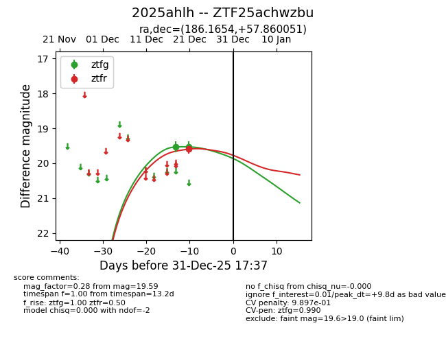
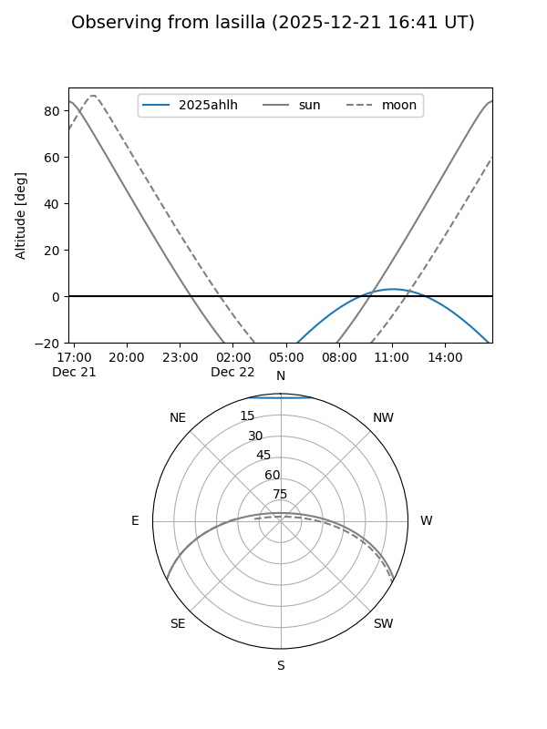
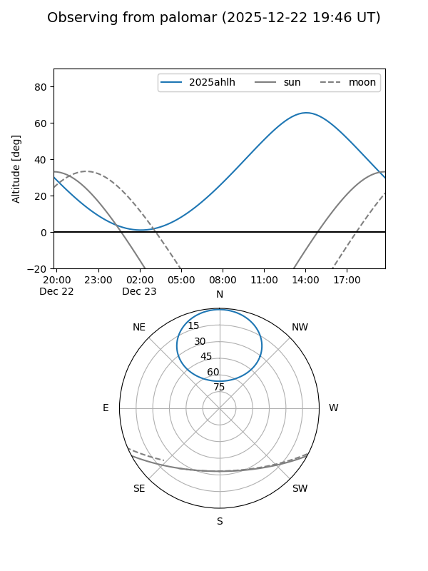

2025ahlh
Target 2025ahlh at 2026-01-09 12:49
Aliases and brokers:
FINK: link
Lasair: link
ALeRCE: link
TNS: link
YSE: link
alt names
ZTF25achwzbu (ztf,fink_ztf)
2025ahlh (tns,yse)
Coordinates:
equatorial (ra, dec) = 186.1654,+57.86005
equatorial (HMS+DMS) = 12:24:39.69,+57:51:36.19
galactic (l, b) = (129.8289,+58.90820)
Flags:
likely cv
Photometry:
last ztfg=19.53, ztfr=19.59
2 ztfg, 1 ztfr detections
Lightcurve

Visibility


Additional plots